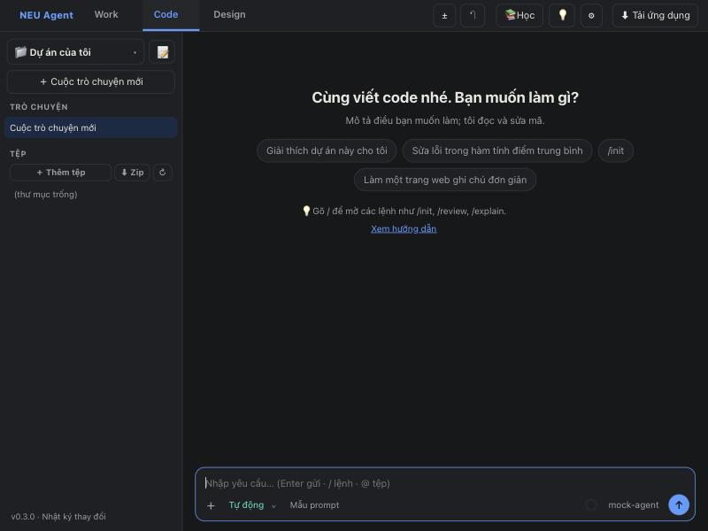
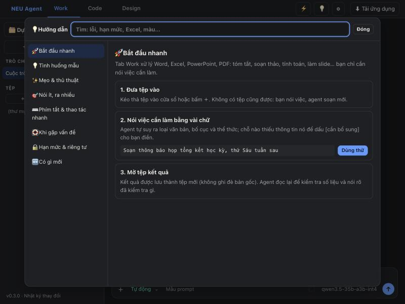
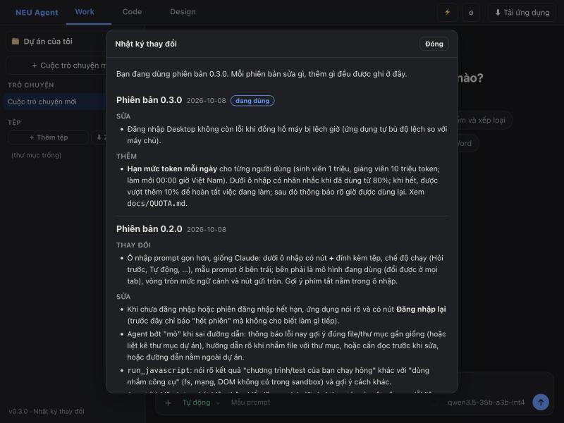

Trợ lý AI của Trường Đại học Kinh tế Quốc dân: viết và sửa mã, xử lý tài liệu, làm thiết kế. Bạn mô tả ngắn gọn, Hando tự hiểu ý, làm đủ việc, tự kiểm tra rồi mới báo kết quả.
Dùng tài khoản @neu.edu.vn hoặc @st.neu.edu.vn · Bản web và bản cài cho máy tínhBấm từng bước. Đây là ảnh chụp từ ứng dụng thật, không cần đăng nhập để xem.
Chuyển qua lại bất kỳ lúc nào. Mỗi chế độ có sẵn “cách làm việc” riêng, bạn chỉ cần nói mục tiêu.

Viết, sửa lỗi, chạy thử và kiểm tra mã trong thư mục của bạn.
/initĐọc, tóm tắt, soạn báo cáo, tổng hợp bảng từ tệp của bạn.
Trang giới thiệu, poster, slide, mẫu biểu có bản xem trước trực tiếp.
Những thứ làm Hando khác một khung chat thông thường.
Một câu ngắn được hiểu thành yêu cầu đầy đủ: có bố cục, xử lý lỗi, trình bày đẹp. Bạn không phải viết bản mô tả dài.
Với mã thì chạy thử; với tài liệu và thiết kế thì đọc lại. Thấy sai thì sửa luôn.
Bấm vào phần tử trên bản xem trước thiết kế, chỉ sửa đúng chỗ đó, không đụng phần còn lại.
Tệp của bạn nằm trên máy bạn. Số liệu cải tiến chỉ gồm con số và mã lỗi, tuyệt đối không có nội dung trò chuyện hay tệp, và bạn tắt được trong phần Cài đặt.
Mỗi người có hạn mức token mỗi ngày (sinh viên 5 triệu, giảng viên 10 triệu), có thêm 10% để hoàn tất lượt đang làm.
Dùng ngay trên trình duyệt, hoặc cài bản cho macOS và Windows để làm việc trực tiếp trong thư mục của bạn.
Nút 💡 ở góc trên có hướng dẫn riêng cho từng chế độ: mẹo, thủ thuật, tình huống mẫu bấm là chạy, phím tắt, cách xử lý khi gặp sự cố. Có ô tìm kiếm (gõ không dấu cũng được) và mục “Có gì mới”.
Đọc hướng dẫn sử dụng Nhật ký thay đổi

Mọi thay đổi đều có trong nhật ký, xem được ngay trong ứng dụng (cuối thanh bên) và trên trang này, kể cả khi chưa đăng nhập.
Mở nhật ký thay đổiCán bộ, giảng viên và sinh viên có tài khoản @neu.edu.vn hoặc @st.neu.edu.vn.
Nội dung bạn trao đổi với mô hình được gửi tới máy chủ mô hình của trường để trả lời. Tệp trong thư mục làm việc chỉ được đọc khi cần cho yêu cầu của bạn. Số liệu cải tiến ứng dụng chỉ gồm con số, không có nội dung, và có thể tắt.
Bản web mở là dùng. Bản cài (macOS, Windows) làm việc trực tiếp với thư mục trên máy và nhận thông báo khi có bản mới. Tải bản cài sau khi đăng nhập, có kèm mã băm SHA-256 để kiểm tra.
Bản cài hiện chưa ký số nên macOS và Windows sẽ cảnh báo. Hãy so mã băm SHA-256 trên trang tải với tệp bạn vừa tải rồi mới mở.
Hạn mức tính lại mỗi ngày. Thanh trạng thái cho biết bạn đã dùng bao nhiêu và khi nào được làm mới.